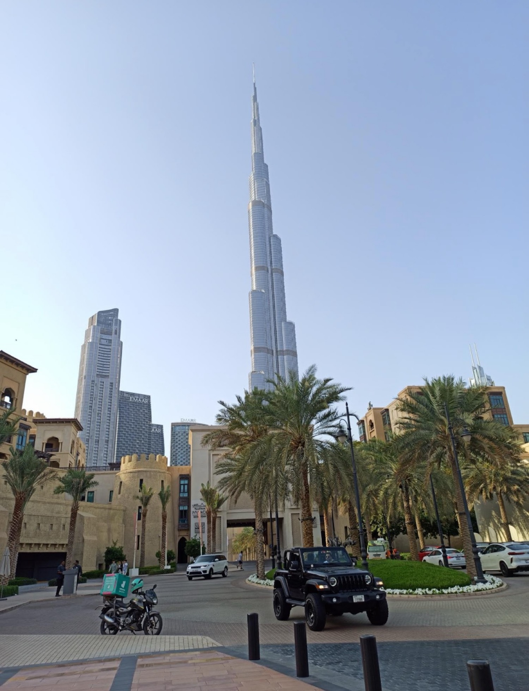
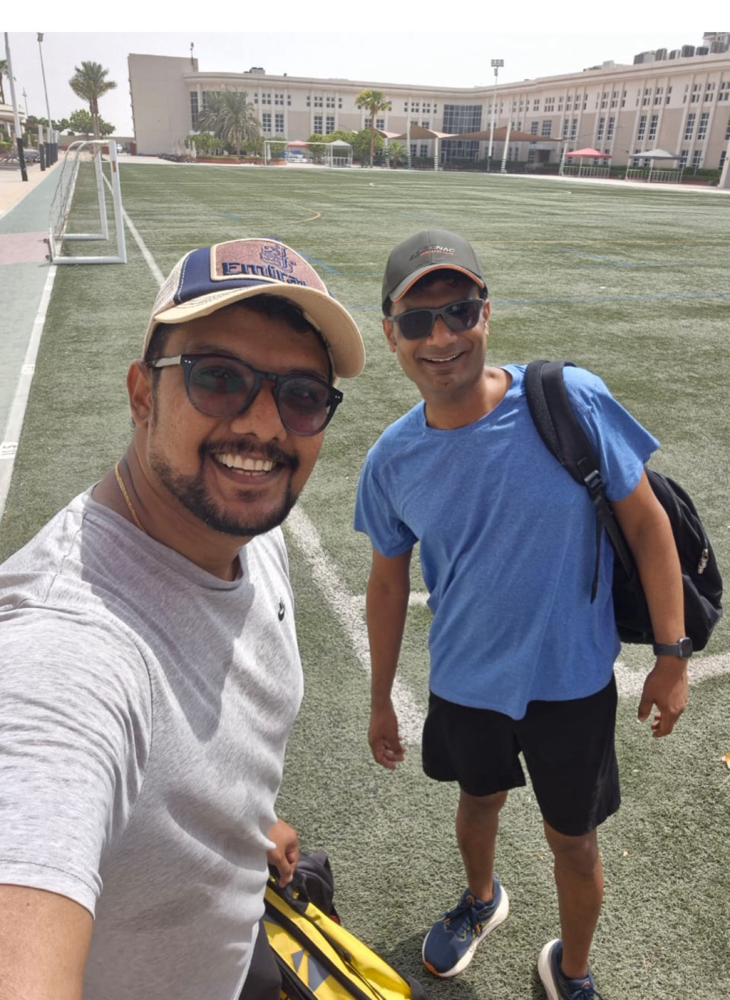
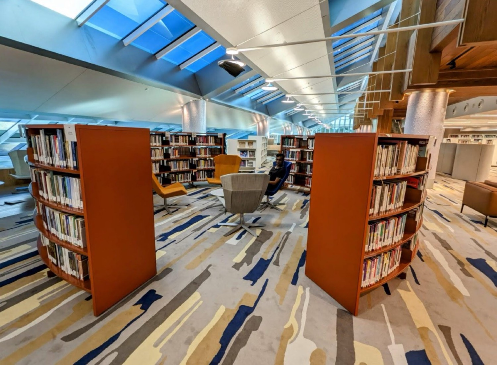
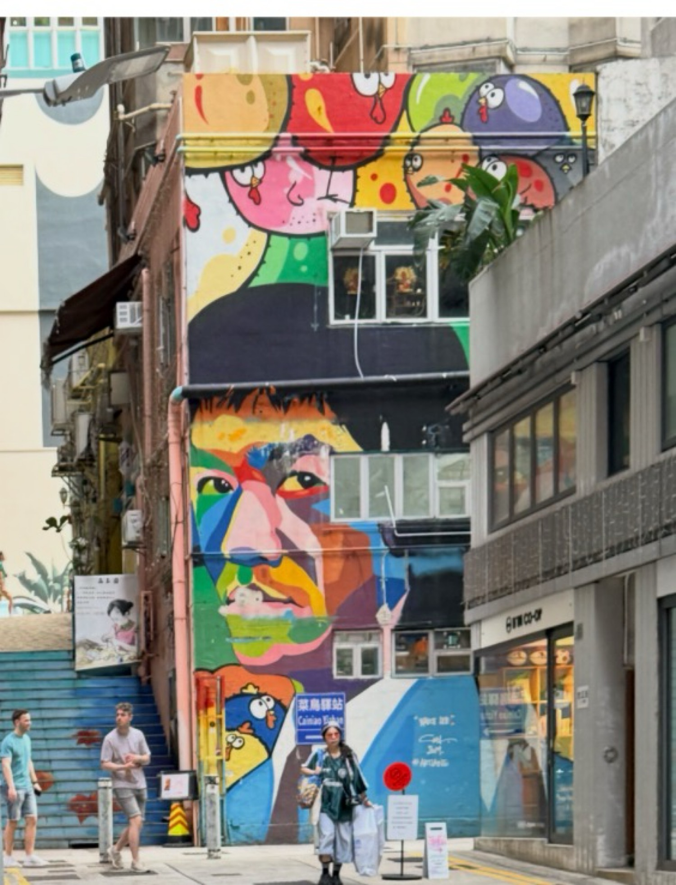
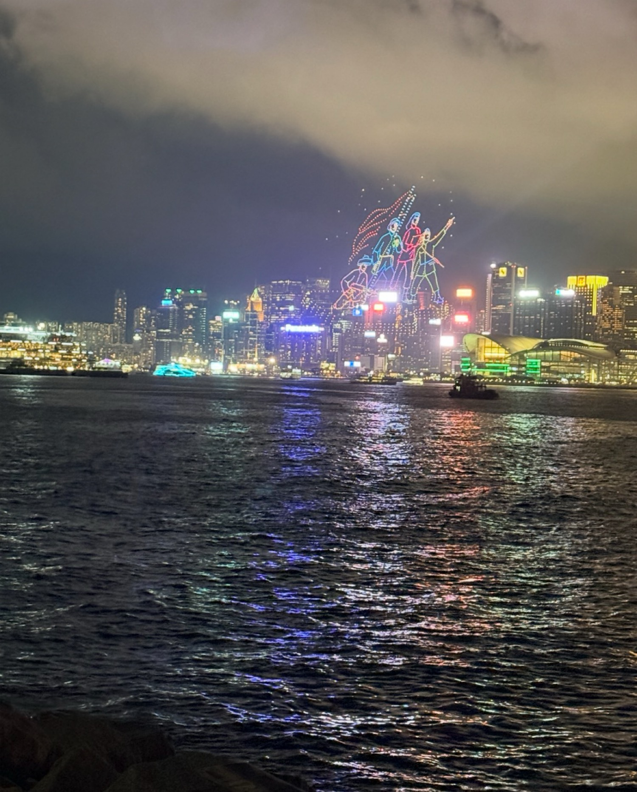
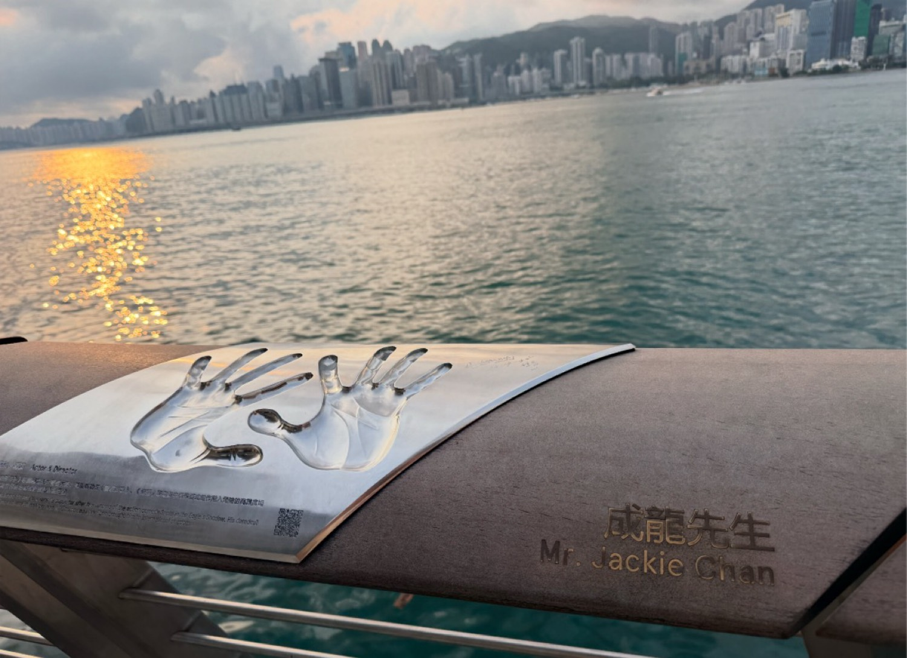
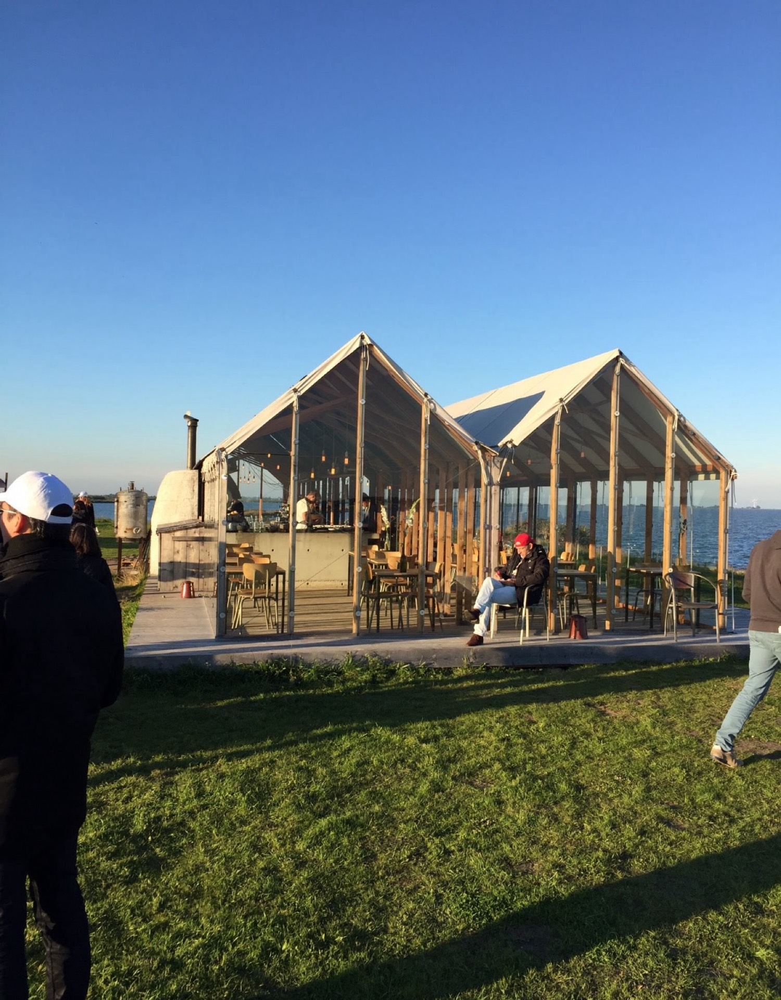
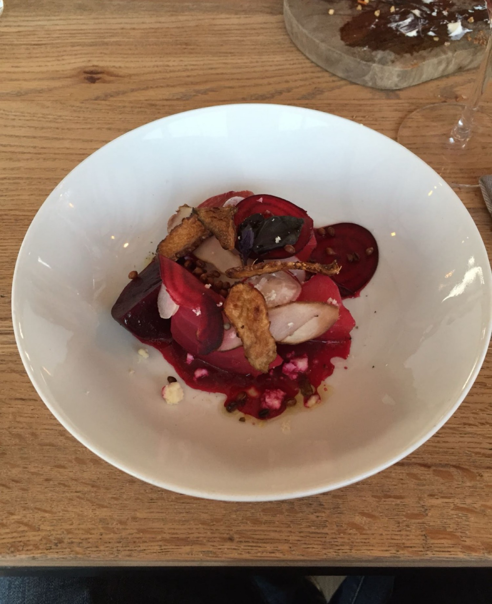

I’ve been through Dubai’s automated immigration gates often enough that they no longer feel novel. You walk up, look at the camera, the barrier opens, and you continue. No conversation, no performance of authority, no small negotiation over the meaning of a stamp. The system has already decided you are who you claim to be. It is the quiet kind of competence that only becomes visible when you return to places where the same process still requires three people, two stamps, and a certain amount of theatre.

Dubai
That first impression of systemic clarity repeats itself across the city in different registers. The sports facilities are a good example. On one ordinary afternoon I found myself on a well-maintained football field in the middle of the working week. The grass was proper, the markings clear, the surrounding infrastructure quietly functional. It was not a showpiece built for a single event. It was simply available — the kind of ordinary excellence that only appears when maintenance is treated as a permanent obligation rather than a periodic project. In many cities such spaces exist mainly as photographs or as temporary venues. Here they seemed to belong to the regular metabolism of the place.

Everyday sports infrastructure, Dubai
The Mohammed Bin Zayed Library offered a different but related sensation. Walking into that building is a small education in what public institutions can still look like when someone decides they should be serious. The light, the scale of the reading spaces, the quiet order of the shelves — none of it felt like an afterthought or a prestige object designed primarily to be photographed. It felt like a working library that also happened to be beautiful. In an age when many public cultural buildings struggle to decide whether they are temples, tourist attractions, or actual working spaces, the Mohammed Bin Zayed Library has chosen a coherent position and then executed it with unusual consistency.

Mohammed Bin Zayed Library, Dubai
Hong Kong runs a parallel but distinct version of the same idea. The residual habits of colonial administration are still legible in the way the city processes people and movement. Immigration is efficient, the MTR remains one of the strongest arguments I know for taking public systems seriously, and the streets somehow absorb both extreme density and continuous construction without collapsing into permanent friction. What stays with me is the layering: old residential blocks covered in bright street art standing next to glass towers, Jackie Chan’s handprints along the waterfront, and a drone show over the harbour that felt less like celebration and more like a precise piece of engineering that happened to be beautiful. The city has learned to keep its machinery running even while it constantly rebuilds itself.

Street art, Hong Kong

Drone show over the harbour

Avenue of Stars
Amsterdam operates on a third tempo. KLM, for all its occasional delays, still delivers one of the more coherent long-haul experiences available. On the ground the city is slower and more deliberate. The glass-walled restaurants by the water, the careful attention given to something as simple as a plate of beetroot, the way people move around the islands — everything suggests a place that has decided efficiency does not always require speed. The systems work, but they leave deliberate room for weather, for conversation, and for the odd hour that does not need to be optimised. It is a different theory of how a dense, modern city can still feel inhabitable.

Waterfront restaurant, Netherlands

A simple plate, carefully done
What interests me is not a ranking. It is the different solutions each place has found to the same underlying problem: how to process large numbers of people, move them, house their institutions, and keep daily life from seizing up under pressure. Dubai has chosen scale, clarity, and a certain administrative optimism. Hong Kong has chosen density, continuity, and the ability to keep functioning while constantly reconstructing itself. Amsterdam has chosen livability inside tight physical and historical constraints.
Mountain road, Khor Fakkan area
India already contains fragments of all three conversations. We know how to build. We have demonstrated, in pockets, that high-quality infrastructure and institutions are not beyond us. The harder question is which tempo we actually want to protect long enough for it to compound. Efficiency is not a single destination or a one-time achievement. It is a set of habits — about maintenance, about standards, about the refusal to treat exceptions as the new normal — that either take root or get negotiated away, one small compromise at a time.
The photographs I kept are useful mainly as evidence. The mountain road in Khor Fakkan cut cleanly through rock. The quiet, serious light inside the Mohammed Bin Zayed Library. The drone figures hanging over Victoria Harbour. The sports fields that remain usable in the heat. None of these things are accidental. They are the visible surface of decisions made years earlier and then maintained without constant drama or reinvention.
That, more than any individual skyline or spectacle, is what stays with me.